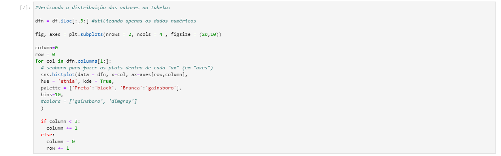
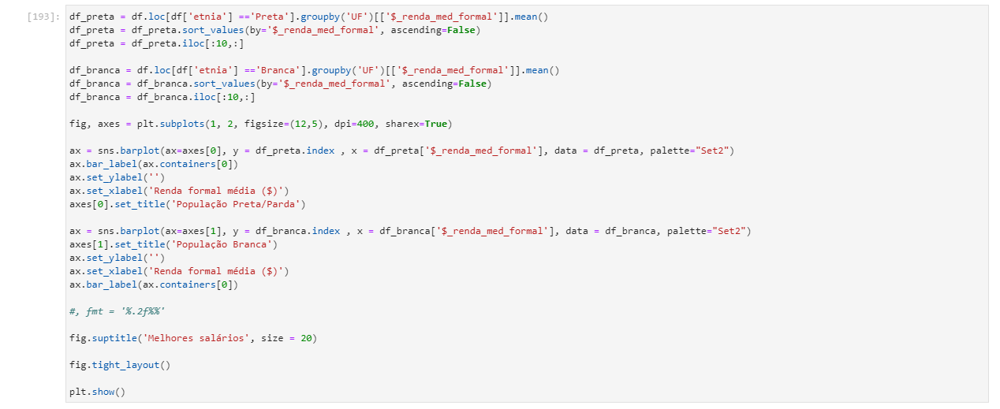
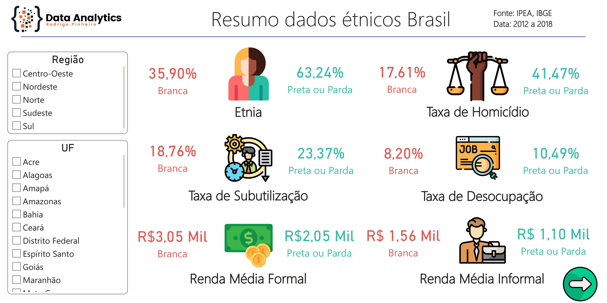

Racismo estrutural no Brasil: evidências e desafios
O Brasil é conhecido mundialmente pela sua diversidade cultural e racial, mas também é um país marcado por profundas desigualdades sociais. O racismo estrutural é caracterizado pela presença de práticas discriminatórias enraizadas nas estruturas sociais e econômicas, que prejudicam grupos raciais específicos e perpetuam desigualdades históricas. Na prática, isso significa que pessoas negras são prejudicadas em diversas esferas da sociedade, desde a economia até a segurança pública.
Acredito na Análise de Dados não apenas como uma ferramenta utilizada para gerar insights de negócios ou soluções estratégicas, mas também a vejo como peça fundamental para buscar entender essas e outras realidades impactadas pelo racismo estrutural no Brasil. Por isso me dedico neste projeto a avaliar alguns indicadores econômicos, demográficos e sociais, para identificar padrões e tendências que possam revelar as desigualdades raciais presentes em nossa sociedade.
Nesta análise foi utilizado dados oficiais que foram obtidos através dos sites do IBGE e IPEA, entre os anos 2012 e 2018, extraídos manualmente em formato de planilhas do EXCEL, que foram adaptadas de maneira a facilitar a criação dos DataFrames e na manipulação dos dados. A seguir apresento os resultados em excel:
Os indicadores utilizados foram:
- %_etnia: Porcentagem da população por Etnia (OBS: representa-se aqui pretos e pardos pela etnia PRETA
- %_desocupacao: Porcentagem de pessoas que possuem força de trabalho, mas que estão desempregadas.(ou seja, que estão em busca de trabalho e podem trabalhar).
- %_subutilizacao: Porcentagem de pessoas que trabalham em menor quantidade de tempo do que poderiam (ou seja, que tem não trabalham durante todo o tempo possível, mesmo tendo disponibilidade)
- $_renda_med_formal: Rendimento médio real habitual do trabalho principal das pessoas de 14 anos ou mais de idade, ocupadas na semana de referência e em trabalhos formais (R$).
- $_renda_med_informal: Rendimento médio real habitual do trabalho principal das pessoas de 14 anos ou mais de idade, ocupadas na semana de referência e em trabalhos informais (R$)
- %_menor_renda_familiar: Porcentagem das pessoas, líderes de família, por etnia, entre as famílias que possuem as 10% menores rendas
- %_maior_renda_familiar: Porcentagem das pessoas, líderes de família, por etnia, entre as famílias que possuem as 10% maiores rendas
- %_taxa_homicidio: quantidade de homicídios classificados como dolosos (praticados voluntária ou intencionalmente, por qualquer instrumento ou meio) para cada 100 mil habitantes (ou seja, nº de homicios (branco/preto) * 100.000 / população).
Para o início das análises foi gerado o DataFrame a partir da planilha e verificado a consistência dos dados:
Foi verificado um resumo da distribuição dos valores:
E em seguida da limpeza e tratamento dos dados foram feitas as devidas análises, levantando questões importantes como:
A realidade do colorismo nas regiões do Brasil:
Qual população sofre mais com os problemas de emprego no Brasil?
Qual o nível de violência (taxa de homicídio) em cada região?
Quais os estados mais violentos?
Como está a diferença de renda nas regiões do Brasil?
E quais estados possuem os melhores salários (renda formal) para cada populaçao?
Visualizações Dinâmicas
Nesta sessão foi definido funções as quais permitem que o usuário possa inserir os dados desejados para análises mais específicas. Alguns exemplos destas funções são:
Evolução dos indicadores ao longo dos anos por região:
Visualizando as diferenças entre as populações por indicador:
Essas e outras análises você poderá explorar melhor pelo link no GitHub
POWER BI
Além do uso do PYTHON para as análises, foi realizado uma abordagem de visualização com o POWER BI, onde foram gerados visualizações gerais que podem ser conferidas a seguir:
Resumo dados étnicos
Através deste dashboard o usuário poderá escolher visualizações por Estado (UF), ou por Região. Os dados servirão de parâmetros para uma avaliação local das diferenças entre populações e suas dimensões sociais, econômica e demográfica:
As diferenças de cada população nas regiões do Brasil
Nesta sessão do Dashboard, nota-se dados de alguns indicadores agrupados por regiões para uma rápida percepção do usuário sobre as diferenças de valores por etnia, deixando visíveis as possíveis tendências.
Considerações Finais
Por fim, os dados analisados evidenciaram que a população preta/parda no Brasil apresentou, em sua maioria, indicadores significativamente desfavoráveis em relação à população branca. Essas disparidades podem ser consideradas um reflexo do racismo estrutural que permeia a sociedade brasileira, que, mesmo com as leis que garantem a igualdade entre os povos, ainda precisa de muitas mudanças sociais para combater tais desigualdades.
O mais impactante dos casos analisados foi enxergar a taxa de homicídio como indicador. As análises demonstraram que, por exemplo, na região Nordeste, a população preta/parda é mais de 4 vezes impactada pela violência do que população branca. Além disso, foi percebido que em todas as regiões do Brasil, a violência para com a população preta obteve índices muitos superiores que a população branca.
Com isso, é crucial que se faça análises e questionamentos sobre a temática racial, especialmente diante da crescente onda de violência e discriminação que se alastra pelo mundo, pois, somente por meio dessas discussões e debates embasados em fatos, é que poderemos avançar em direção à democracia racial e à justiça social.
Espero que estas análises tenham feito sentido para você (o quanto fez para mim), pois precisamos enfrentar essas desigualdades de frente, juntos, a fim de construir uma sociedade mais justa e igualitária. Muito obrigado pela sua leitura!
(caso queira fazer algum comentário, entre em contato através de minhas redes socias)